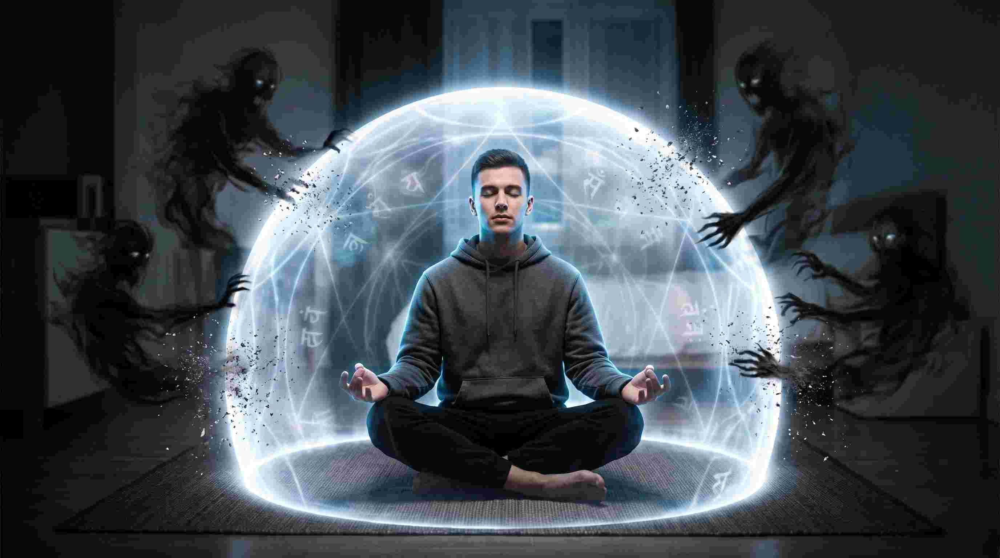

मनुष्य का सबसे बड़ा दुश्मन बाहर नहीं, उसके अपने मस्तिष्क में बैठा है—और उस दुश्मन का नाम है "भय" (Fear)। मृत्यु का भय, बीमारी का भय, शत्रुओं का भय, या अज्ञात भविष्य का भय। जब आप डरते हैं, तो आपका पूरा जीवन पंगु (Paralyzed) हो जाता है। लेकिन क्या कोई ऐसी शक्ति है जो आपको मृत्यु के मुख से भी निर्भय होकर बाहर निकाल सके?
एक मेडिकल छात्र और वैदिक ज्योतिषी होने के नाते, मैं जानता हूँ कि भय केवल एक विचार नहीं, बल्कि हमारे शरीर में एक बायो-केमिकल रिएक्शन है। जब मैंने स्कंद पुराण में वर्णित 'अमोघ शिव कवच' (Amogh Shiv Kavach) का गहराई से अध्ययन किया, तो पाया कि यह मात्र एक प्रार्थना नहीं, बल्कि हमारे न्यूरोलॉजिकल सिस्टम (Neurological System) को "हैकिंग" करने का एक अत्यंत उन्नत ध्वन्यात्मक अस्त्र (Acoustic Weapon) है। आइए, इस अजेय कवच के रहस्य को विज्ञान और अध्यात्म की कसौटी पर परखें।
"कवच का अर्थ है 'ढाल' (Shield)। शिव कवच आपके शरीर के चारों ओर एक ऐसा इलेक्ट्रोमैग्नेटिक 'बायो-शील्ड' तैयार कर देता है, जिसे कोई नकारात्मक ऊर्जा, तांत्रिक प्रयोग या बीमारी भेद नहीं सकती।"
1. भय का विज्ञान और शिव कवच की न्यूरोलॉजी
जब आपको डर लगता है, तो आपके मस्तिष्क का एक छोटा सा हिस्सा जिसे अमिग्डाला (Amygdala) कहते हैं, हाइपरएक्टिव हो जाता है। यह आपके शरीर में कॉर्टिसोल (Cortisol) और एड्रेनालाईन (Adrenaline) छोड़ता है, जिससे आपकी धड़कन तेज हो जाती है और शरीर कांपने लगता है। मेडिकल साइंस में इसे 'Fight or Flight' प्रतिक्रिया कहते हैं।
भगवान शिव को 'महाकाल' और 'मृत्युंजय' कहा जाता है—यानी वे समय और मृत्यु के भी नियंत्रक हैं। जब आप 'अमोघ शिव कवच' के विशिष्ट बीजाक्षरों (Seed Syllables) का उच्चारण करते हैं, तो वह ध्वनि सीधे आपकी 'वेगस नर्व' (Vagus Nerve) को उत्तेजित करती है। यह आपके पैरासिम्पेथेटिक नर्वस सिस्टम (Parasympathetic Nervous System) को चालू कर देता है, जो अमिग्डाला को "शांत" होने का आदेश देता है। डर तुरंत खत्म हो जाता है, और आपके भीतर एक अजेय आत्मविश्वास (Invincible Confidence) पैदा होता है।
2. अंग न्यास (Anga Nyasa): शरीर के मर्म बिंदुओं का जागरण
शिव कवच का पाठ करने से पहले 'न्यास' किया जाता है। न्यास का अर्थ है— मंत्र बोलते हुए शरीर के विशिष्ट अंगों को छूना।
प्राचीन आयुर्वेद और एक्यूप्रेशर के अनुसार, हमारे शरीर में 107 मर्म बिंदु (Marma Points) होते हैं। जब आप न्यास करते हुए अपने हृदय, सिर, नाभि या नेत्रों को स्पर्श करते हैं, तो आप वास्तव में अपने न्यूरो-मेरिडियन्स (Neuro-meridians) को एक्टिवेट कर रहे होते हैं। यह आपके सूक्ष्म शरीर (Astral Body) को शिव की 'कॉस्मिक फ्रीक्वेंसी' को डाउनलोड करने के लिए तैयार करता है।
3. सम्पूर्ण अमोघ शिव कवच (मूल पाठ एवं अर्थ)
स्कंद पुराण के ब्रह्मोत्तर खंड में ऋषि ऋषभ द्वारा राजकुमार भद्रायु को यह महा-कवच सुनाया गया था। यह कवच किसी भी प्रकार की अकाल मृत्यु, प्रेत बाधा और घोर बीमारियों को नष्ट करने में सक्षम है। यहाँ इस परम शक्तिशाली कवच का सम्पूर्ण पाठ और उसका गहरा अर्थ दिया जा रहा है:
अस्य श्री शिवकवच स्तोत्र महामन्त्रस्य
ऋषभ योगीश्वर ऋषिः । अनुष्टुप् छन्दः ।
श्री साम्बसदाशिवो देवता ।
विनियोग: इस शिव कवच स्तोत्र महामंत्र के रचयिता ऋषि ऋषभ योगीश्वर हैं, छन्द अनुष्टुप है, और इसके देवता माता पार्वती सहित भगवान साम्बसदाशिव हैं।
वज्रदंष्ट्रं त्रिनयनं कालकण्ठमरिन्दमम्।
सहस्रकरमत्युग्रं वन्दे शम्भुमुमापतिम्॥ १ ॥
ध्यान: जिनके दांत वज्र के समान कठोर हैं, जिनके तीन नेत्र हैं, जिनका कंठ नीले रंग का (कालकंठ) है, जो शत्रुओं का दमन करने वाले हैं, जिनके हजार हाथ हैं, और जो अत्यंत उग्र हैं—उन उमापति भगवान शम्भु की मैं वंदना करता हूँ।
विज्ञान: शिव का यह उग्र ध्यान आपके भीतर सोई हुई 'कुण्डलिनी शक्ति' को जाग्रत करता है और मानसिक दुर्बलता को तुरंत नष्ट कर देता है।
अथापरं सर्वपुराणगुह्यं
निःशेषपापौघहरं पवित्रम्।
जयप्रदं सर्वविपत्प्रमोचनं
वक्ष्यामि शैवं कवचं हिताय ते॥ २ ॥
अर्थ: ऋषि कहते हैं— अब मैं तुम्हें सभी पुराणों का सबसे गुप्त, सम्पूर्ण पापों को नष्ट करने वाला, परम पवित्र, सर्वत्र विजय दिलाने वाला और सभी विपत्तियों से छुड़ाने वाला 'शिव कवच' तुम्हारे हित के लिए बताता हूँ।
पञ्चपूजाम्बासनस्थो ध्यानमग्नः सुशांतधीः।
स ध्यायेत् परमेशानं देवं त्र्यम्बकमव्ययम्॥ ३ ॥
अर्थ: स्वच्छ आसन पर बैठकर, मन को शांत और ध्यानमग्न करके, उन परमेश्वर, तीन नेत्रों वाले, अविनाशी भगवान शिव का ध्यान करना चाहिए।
हृदये मां शिवः पातु कण्ठे पातु नीलकण्ठः।
शिरो मे शङ्करः पातु फालं भालविलोचनः॥ ४ ॥
अर्थ: भगवान शिव मेरे हृदय की रक्षा करें। नीलकंठ मेरे गले की रक्षा करें। भगवान शंकर मेरे सिर की रक्षा करें, और जिनके मस्तक पर तीसरा नेत्र है वे भालविलोचन मेरे ललाट (माथे) की रक्षा करें।
विज्ञान: हृदय (Anahata Chakra) और गला (Vishuddha Chakra) शरीर के सबसे संवेदनशील ऊर्जा केंद्र हैं। यहाँ यह मंत्र 'हार्ट रेट' और 'थायरॉइड' ग्रंथि को संतुलित करता है।
नेत्रे पिनाकपाणिर्पातु नासिकां मे शिवः सदा।
मुखं पशुपतिर्पातु जिह्वां मे पातु शूलभृत्॥ ५ ॥
अर्थ: हाथ में पिनाक धनुष धारण करने वाले मेरी आँखों की रक्षा करें। शिव सदा मेरी नासिका (नाक) की रक्षा करें। पशुपति मेरे मुख की, और त्रिशूल धारण करने वाले मेरी जिह्वा की रक्षा करें।
कर्णौ पातु गिरीशश्च गुह्यं मे गुह्यकप्रियः।
बाहू मे वज्रबाहुश्च करौ मे कपालभृत्॥ ६ ॥
अर्थ: पर्वतों के स्वामी गिरीश मेरे कानों की रक्षा करें। गुह्यकों के प्रिय भगवान मेरे गुप्त अंगों की रक्षा करें। वज्र के समान भुजाओं वाले मेरी भुजाओं की, और कपाल धारण करने वाले मेरे हाथों की रक्षा करें।
वक्षो मे पातु त्रिपुरघ्नो नाभिं मे पातु भर्गः।
कटिं मे पातु कपाली चोरू मे भैरवः सदा॥ ७ ॥
अर्थ: त्रिपुरासुर का वध करने वाले मेरी छाती की रक्षा करें। भगवान भर्ग मेरी नाभि की रक्षा करें। कपाली मेरी कमर की, और भगवान भैरव सदा मेरी जांघों की रक्षा करें।
जानुनी मे जगन्नाथो जङ्घे मे पातु जङ्गमः।
गुल्फौ मे पातु गिरीशः पादौ मे पातु पार्वतीपतिः॥ ८ ॥
अर्थ: जगन्नाथ मेरे घुटनों की रक्षा करें। जंगम रूप भगवान मेरी पिंडलियों की रक्षा करें। गिरीश मेरे टखनों की, और माता पार्वती के पति भगवान शिव मेरे पैरों की रक्षा करें।
पूर्वे मां पातु विश्वेशो दक्षिणे सदाशिवः।
पश्चिमे पातु मां देवो दिनानाथो महेश्वरः॥ ९ ॥
अर्थ: पूर्व दिशा में भगवान विश्वेश्वर मेरी रक्षा करें। दक्षिण दिशा में भगवान सदाशिव रक्षा करें। पश्चिम दिशा में अनाथों के नाथ भगवान महेश्वर मेरी रक्षा करें।
उत्तरे पातु मां शर्वो ऊर्ध्वं पातु शिवः सदा।
अधस्तु पातु शर्वस्तु सर्वतः पातु शङ्करः॥ १० ॥
अर्थ: उत्तर दिशा में शर्व (शिव) मेरी रक्षा करें। ऊपर की ओर भगवान शिव सदा रक्षा करें। नीचे की ओर शर्व रक्षा करें, और सब दिशाओं से भगवान शंकर मेरी रक्षा करें।
रक्षाहीनं तु यत्स्थानं कवचेन विवर्जितम्।
तत्सर्वं रक्ष मे शम्भो सर्वात्मा त्वं महेश्वरः॥ ११ ॥
अर्थ: मेरे शरीर का जो भी अंग इस कवच में वर्णित होने से छूट गया हो और रक्षाहীন रह गया हो, हे शम्भो! हे सर्वात्मा महेश्वर! आप उन सभी अंगों की रक्षा करें।
विज्ञान: यह श्लोक एक सम्पूर्ण 'हीलिंग कमांड' (Healing Command) है, जो शरीर के सेल्युलर लेवल (Cellular level) तक काम करता है और अघोषित बीमारियों (Undetected diseases) को रोकता है।
भूर्भुवः स्वः स्वरूपाया त्रैलोक्यव्यापिणे नमः।
अघोरमन्त्ररूपाय भैरवाय नमो नमः॥ १२ ॥
अर्थ: भूः, भुवः, और स्वः स्वरूप वाले, तीनों लोकों में व्याप्त भगवान को नमस्कार है। अघोर मंत्र रूप वाले भगवान भैरव को बारम्बार नमस्कार है।
भूतप्रेतपिशाचाश्च यक्षगन्धर्वराक्षसाः।
डाकिनीशाकिनीवेतालाः कूष्माण्डा भैरवादयः॥ १३ ॥
नश्यन्तु ते स्यद्यो महाकवचधारिणः।
भस्मीभवन्तु ते सर्वे शिवकवचतेजसा॥ १४ ॥
अर्थ: भूत, प्रेत, पिशाच, यक्ष, गंधर्व, राक्षस, डाकिनी, शाकिनी, बेताल, कूष्मांड और भैरवादि—इस महा-कवच को धारण करने वाले मनुष्य के सामने आते ही तुरंत नष्ट हो जाएं। वे सभी शिव कवच के तेज से भस्म हो जाएं।
य इदं शृणुयान्नित्यं य इदं कीर्तयेत् सदा।
तस्य रोगो न च भयं न च मृत्युर्भवति कर्हिचित्॥ १५ ॥
फलश्रुति: जो व्यक्ति इस शिव कवच का नित्य श्रवण करता है या जो सदा इसका कीर्तन (पाठ) करता है, उसे जीवन में कभी कोई रोग, कोई भय, और अकाल मृत्यु नहीं सताती।

4. शिव कवच के अकल्पनीय लाभ
- अकाल मृत्यु से बचाव: यदि कुंडली में मारकेश (8th या 2nd house lord) की दशा चल रही हो, या भीषण दुर्घटनाओं का योग हो, तो यह कवच महामृत्युंजय मंत्र के समान ही जीवन की रक्षा करता है।
- क्रोनिक बीमारियों का उपचार (Chronic Illness): जो बीमारियां लंबी चलती हैं (Autoimmune, Cancer, Neurological), वे शरीर की ऊर्जा के क्षय होने से होती हैं। यह कवच उस 'एनर्जी लीक' (Energy Leak) को बंद कर देता है।
- तंत्र-मंत्र और बुरी नजर से सुरक्षा: श्लोक 13 और 14 के उच्चारण से उत्पन्न ध्वनि तरंगें (Frequencies) किसी भी प्रकार की 'नेगेटिव साइकिक एनर्जी' (Negative Psychic Energy / Black Magic) को तुरंत डिकोड और नष्ट कर देती हैं।
- असीमित निर्भयता (Fearlessness): जो छात्र, व्यापारी या सैनिक गंभीर दबाव (High Pressure) में काम करते हैं, उनके लिए यह स्तोत्र उनके 'ऑरा' (Aura) को लोहे की तरह मजबूत बना देता है।
5. 21-दिन का शिव कवच अनुष्ठान (Action Plan)
यदि आप किसी भारी संकट, मानसिक अवसाद (Depression) या गंभीर बीमारी से घिरे हैं, तो इस अनुष्ठान को अपनाएं:
- दिन और समय: किसी भी सोमवार (Monday) से शुरू करें। ब्रह्म मुहूर्त (सुबह 4 से 6 बजे) का समय सर्वश्रेष्ठ है।
- आसन: सफेद या ऊनी आसन पर उत्तर (North) या पूर्व (East) दिशा की ओर मुख करके बैठें।
- जल का प्रयोग: तांबे के लोटे में थोड़ा जल रखें। कवच का पाठ करने के बाद उस जल में 3 बार फूंक मारें और उसे पी लें। यह जल अब 'शिवाम्बु' (Charged Cosmic Water) बन चुका है।
- नियम: लगातार 21 दिनों तक बिना नागा किए इसका पाठ करें। इस दौरान सात्विक आहार लें और क्रोध से बचें।
निष्कर्ष: अपनी आभा (Aura) को लॉक करना सीखें
हम वायरस से बचने के लिए मास्क लगाते हैं, कंप्यूटर को हैकर्स से बचाने के लिए एंटीवायरस डालते हैं, लेकिन अपनी सबसे कीमती संपत्ति—अपने आभा मंडल (Aura) को खुला छोड़ देते हैं, जहाँ से रोज नकारात्मकता प्रवेश करती है।
अमोघ शिव कवच आपके ऊर्जा-शरीर का वह 'एंटीवायरस' है जिसे स्वयं देवाधिदेव महादेव ने एनक्रिप्ट (Encrypt) किया है। जब आप पूर्ण विश्वास और एकाग्रता के साथ भगवान शिव के विभिन्न स्वरूपों का आह्वान करते हैं, तो पूरा ब्रह्मांड आपकी रक्षा के लिए खड़ा हो जाता है। आज ही इस कवच को धारण करें और मृत्यु के भय को भी मृत्यु दे दें। "ॐ नमः शिवाय!"